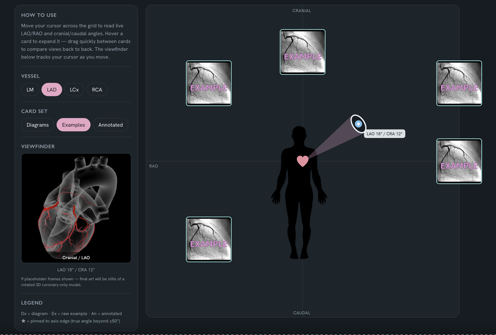
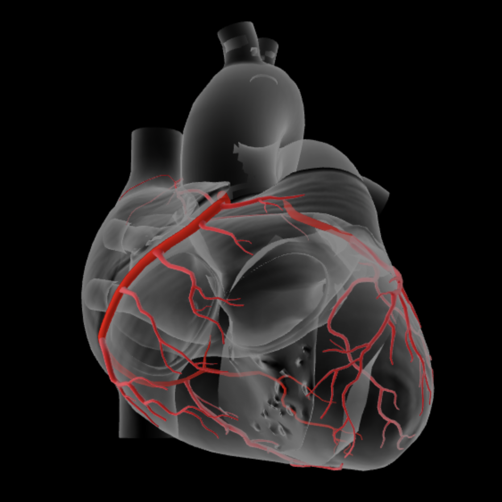

Preview mode — shared header/nav loads automatically once this file lives at /angio-viewer/ on the live site.
Mobile isn't supported yet — this tool relies on cursor hover to work. Here's what it looks like on desktop:

How to use
Move your cursor across the grid to read live LAO/RAO and cranial/caudal angles. Hover a card to expand it — drag quickly between cards to compare views back to back. The viewfinder below tracks your cursor as you move.
Vessel
Card set
Viewfinder

Neutral / AP
LAO 0° / CRA 0°
9 placeholder frames shown — final art will be stills of a rotated 3D coronary-only model.
Legend
Dx = diagram · Ex = raw example · An = annotated
★ = pinned to axis edge (true angle beyond ±50°)